Otaru
Otaru · Hokkaido
Otaru
Highlighted on the Hokkaido map.

Stay
ゲストハウス小樽 和の風
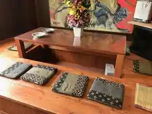
Gesutohausu Otaru Nagono Kaze
遼庵
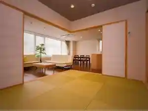
Ryou Iori
The Apartment Hotels KOU
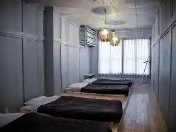
The Apartment Hotels Kou
民宿一休
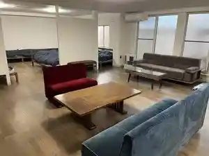
Minshuku Ikkyuu
クールイン小樽
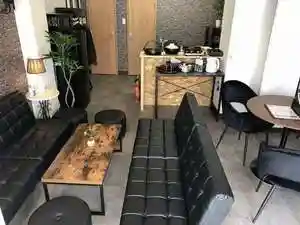
Kuuruin Otaru
Tabist fami THE GREEN OTARU（ファミ ザグリーン小樽）
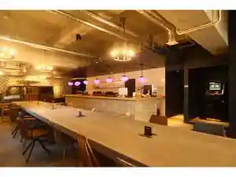
Tabist Fami The Green Otaru ( Fami Zaguriin Otaru )
オーセントホテル小樽
Oosentohoteru Otaru
Ｏｔａｒｕ ＹａＤｏ
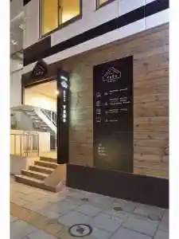
O T A R U Y A D O
グリッズプレミアムホテル小樽
Gurizzupuremiamuhoteru Otaru
Ｈｏｓｔｅｌ 順風満帆
H O S T E L Junpuu Manpan
ドーミーインPREMIUM小樽(2026年8月1日リニューアル)
Doomiiin Premium Otaru (2026 Nen 8 Gatsu 1 Nichi Rinyuuaru )
Little Barrel
Little Barrel
Dining
おたる鮨処 伊藤

Otaru Sushi Tokoro Itou
和食処 晄進
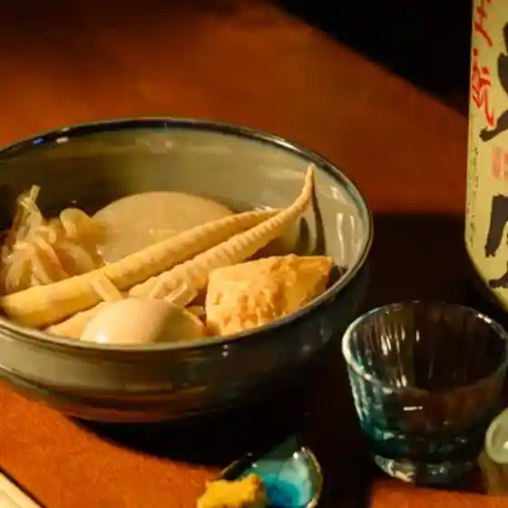
Washoku Tokoro Akira Susumu
ジンギスカーン 小樽別邸
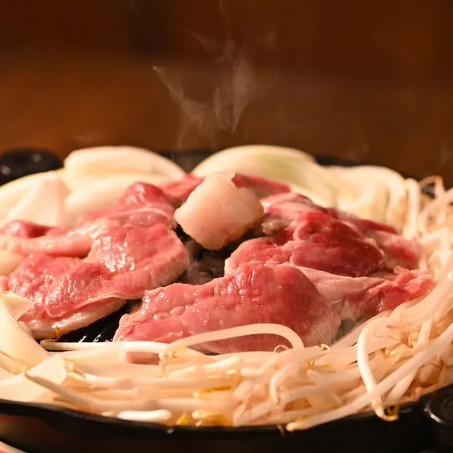
Jingisukaan Otaru Bettei
ガヤ 小樽店
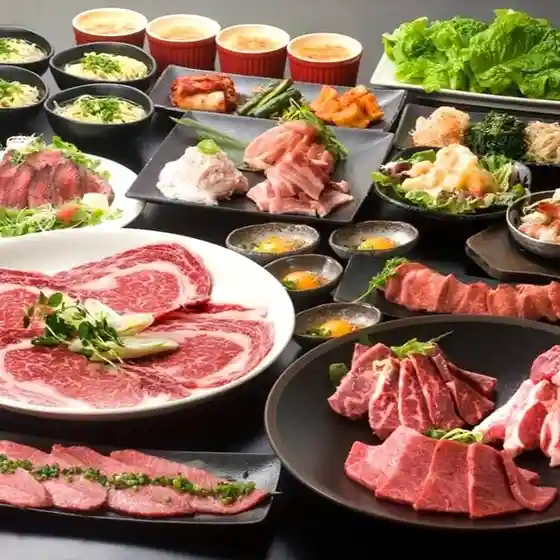
Gaya Otaru Mise
小樽バイン
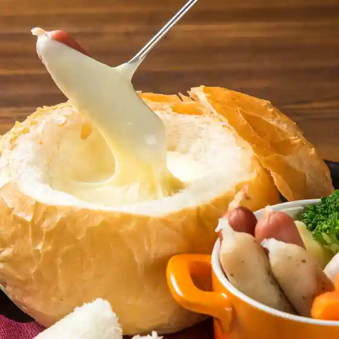
Otaru Bain
ジンギスカン えいじん 小樽店
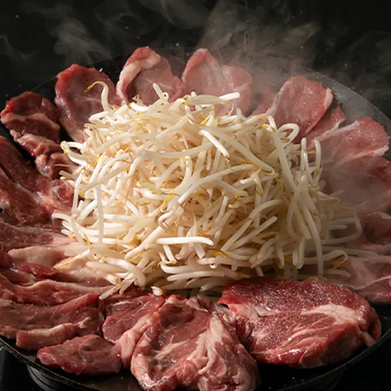
Jingisukan Eijin Otaru Mise
ISO
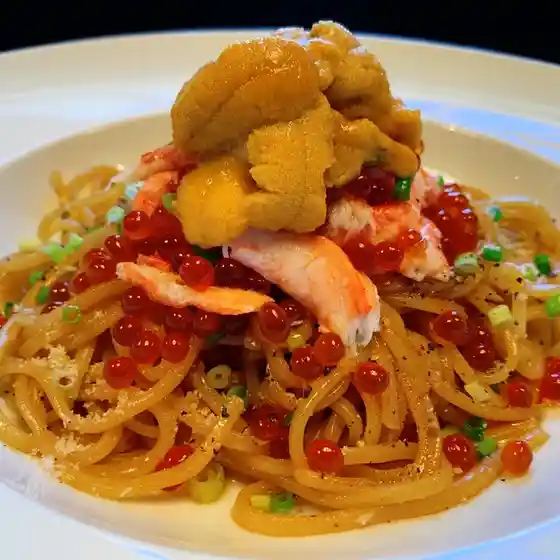
Iso
山の猿 小樽駅前店

Yama No Saru Otarueki Mae Mise
かまわぬ
Kamawanu
ザ・ボール 小樽
Za Booru Otaru
石と鉄 STONE and IRON
Ishi To Tetsu Stone And Iron
もっきり荘
Mokkiri Sou
おたる政寿司 ぜん庵
Otaru Masatoshi Tsukasa Zen Iori
鶏屋 鳳
Niwatori Ya Ootori
よし
Yoshi
寿し処 彩華
Hisashi Shi Tokoro Ayaka
LAMB LAND
Lamb Land
大仁門 朝里店
Oohito Mon Asa Sato Mise
YUKIAKARI
Yukiakari
炭火焼肉大徳
Sumibi Yakiniku Daitoku
Tug-B
Tug-B
小樽料理 海月
Otaru Ryouri Kurage
濱焼北海道魚萬 小樽駅前本店
Hamayaki Hokkaidou Sakana Man Otarueki Maemoto Mise